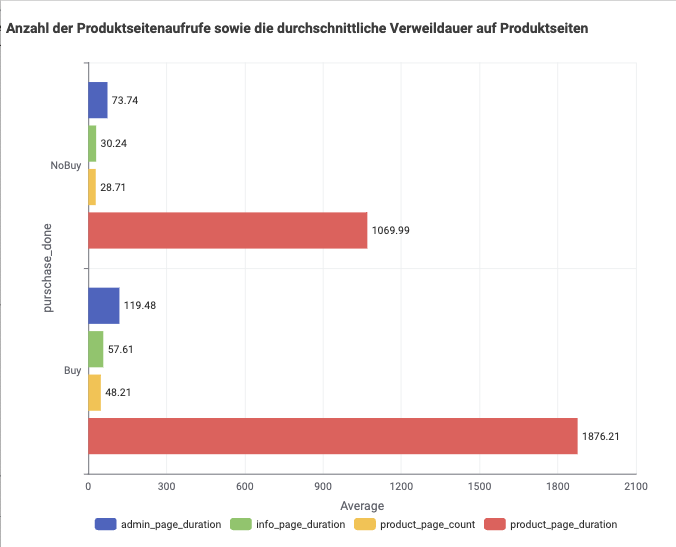
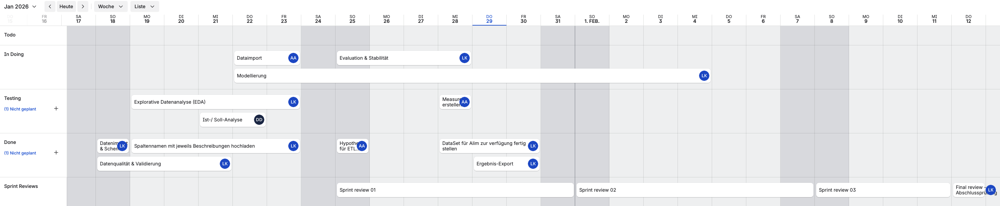
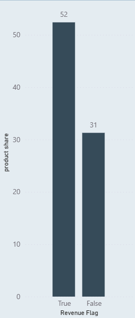

Gliederung
- 1 Ausgangssituation, Ist-Analyse, User Stories, Hypothesen
- 2 Projektmanagement
- 3 KNIME
- 4 Power BI - Ergebnisse
- 5 Maßnahmen, Handlungsempfehlungen
Ausgangssituation (Ist-Analyse)
- Lücke zwischen Besucherzahlen und tatsächlichen Kaufabschlüssen
- Ziel: Verhaltensmuster erkennen, die zu einem Kauf führen
- Große Menge an Session-Daten als Grundlage
- Fokus auf: Visitor Type, Page Count, Page Duration, Revenue, Monat, Weekend
Datenquelle & Dataset
- Quelle: UCI ML Repository – „Online Shoppers Purchasing Intention“
- Anzahl Sessions: 12.330
- Merkmale: Nutzerverhalten (Seitenanzahl, Verweildauer), Engagement (BounceRate, ExitRate, PageValue), Zeit & Kontext (Monat, Weekend), Technik (Browser, OS, VisitorType), Zielvariable: Revenue
- Zielvariable:
purschase_done∈ {Buy, NoBuy}
User Stories
- US1 – Als Online-Marketing-Manager: Vorhersage, ob Session zu Kauf führt → Marketing gezielt ausrichten
- US2 – Als Marketing Manager: Neue vs. wiederkehrende Besucher unterscheiden → gezielte Maßnahmen für Returning Visitors
- US3 – Als Data Analyst: Muster im Nutzerverhalten → Einflussfaktoren Kaufabschluss
- US4 – Als Produktmanager: ML-Modell für Kaufwahrscheinlichkeit, Echtzeit-Klassifikation
- US5 – Returning Visitors haben höhere Conversion Rate
Priorisierung: Low Hanging Fruits
US1 – Online-Marketing-Manager
Vorhersage, ob Session zu Kauf führt
Hypothesen
- H1 – Produktinteraktion beeinflusst Kaufabschluss positiv (Product-related, Revenue)
- H2 – Returning Visitors kaufen häufiger als neue Besucher
- H3 – Längere Verweildauer → wahrscheinlicher Kaufabschluss
- H4 – Wochenend-Besuche → höhere Kaufwahrscheinlichkeit
- H5 – Returning Visitors haben höhere Conversion Rate (visitor_type, revenue_flag)
Herausgestellte Hypothese
H1 – Produktinteraktion beeinflusst Kaufabschluss positiv (Product-related, Revenue)
Projektorganisation & Kommunikation
- Abstimmung über Zoom und WhatsApp
- Trello für Planung, Koordination und Dokumentation
- User Stories, Arbeitspakete und Aufgaben priorisiert und Phasen zugeordnet
- Datenbasis wöchentlich aktualisiert
Kanban-Board
Projektaufgaben und Sprint-Reviews

Gantt-Diagramm
Projektzeitplan
Aufgabenpakete & Aufwände
| Aufgabenpaket | Aufwand |
|---|---|
| Datenüberprüfung (Vollständigkeit, Plausibilität) | ca. 1,5 h |
| Einfache Datenaufbereitung, Kategorisierung | ca. 2 h |
| Hypothesenprüfung | ca. 1,5 h |
| Erste Visualisierung | ca. 1 h |
| Dokumentation | ca. 1,5 h |
| Datenaufbereitung in KNIME, EDA, Modellierung (XGBoost), KNIME–Power BI, Dashboard, Interpretation | – |
KNIME-Workflow – Gesamtansicht
Workflow „Einkaufabschluss“
Schritt 1: Data Import (#26)
- CSV Reader –
online_shoppers_intention.csv - Column Renamer – snake_case
- Duplicate Row Filter – Duplikate entfernen
- Counter Generation, Table View
Schritt 2: EDA (#60)
- Datenvorbereitung – Rule Engine, Row Filter
- Previsualisi – Missing Value, Statistics, Data Explorer
- Visualizatio – Pie Chart, Bar Chart, Color Manager
Schritt 3: Feature Engineering (#58)
- Math Formula – total_page_count, total_duration, avg_time_per_page, product_share
- Rule Engine, One to Many, Column Filter
- CSV Writer – Gesamtdatensatz
Schritt 4: Modell (#57)
- Table Partitioner – Train/Test-Split
- XGBoost Learner · XGBoost Predictor
- Scorer · ROC Curve
- CSV Writer – XGBoost_Modell.csv
Feature Engineering (Kernmerkmale)
total_page_count,total_duration,avg_time_per_pageproduct_page_count,product_page_duration,product_share- Kontext: VisitorType, Weekend, Monat
Modellierung – XGBoost
Boosting Rounds: 350 Learning Rate: 0.05
Max Depth: 5 Subsample: 0.8 Seed: 42Workflow in Power BI
- 1 Daten einspielen
-
2 Datenmodell erstellen

- 3 Identifizierung der wesentlichen Treiber
- 4 Hypothesenanalyse / -prüfung
- 5 ML-Modell: Muster bestätigen & Ergänzung
Datenübergabe KNIME → Power BI
- CSV-Exporte aus KNIME: XGBoost_Modell.csv
- Diese Daten füllen Business-KPIs und Dashboard
KPIs - Idenfizierung der wesentlichen Treiben
- Kaufrelevante Metriken (Conversion, Revenue)
- Nutzerverhalten (Produktseiten, Verweildauer)
- Modelloutput (Vorhersage Kauf ja/nein)
Hypothesenvalidierung – Käufer vs. Nicht-Käufer(1)


Käufer: mehr Seiten, längere Verweildauer
Hypothesenvalidierung – Käufer vs. Nicht-Käufer(2)

ML-Modell - Musterbestätigung

Maßnahmen
- 1) Produktinteraktion gezielt fördern – „Das könnte Sie auch interessieren“, Zubehör, mehr Details
- 2) Produktseiten als Entscheidungsraum – ausführliche Beschreibungen, Bilder, Bewertungen
- 3) Vergleichen erleichtern – Vergleichstabellen, „Unsere Empfehlung“
Maßnahmen (Fortsetzung)
- 4) Nutzer mit hoher Interaktion unterstützen – keine aggressiven Pop-ups, dezente Hilfsangebote
- 5) Content-Qualität priorisieren – FAQ, Lieferung/Rückgabe, „Für wen geeignet?“
- 6) Erfolgreiche Interaktionsmuster übertragen – Best Practices von Top-Seiten auf andere Produkte
Zusammenfassung Maßnahmen
Produktinteraktion fördern statt reduzieren; Produktseiten als Entscheidungshelfer ausbauen; Vergleich und Information bewusst ermöglichen.
Quelle
Vielen Dank

Haben Sie weitere Fragen?